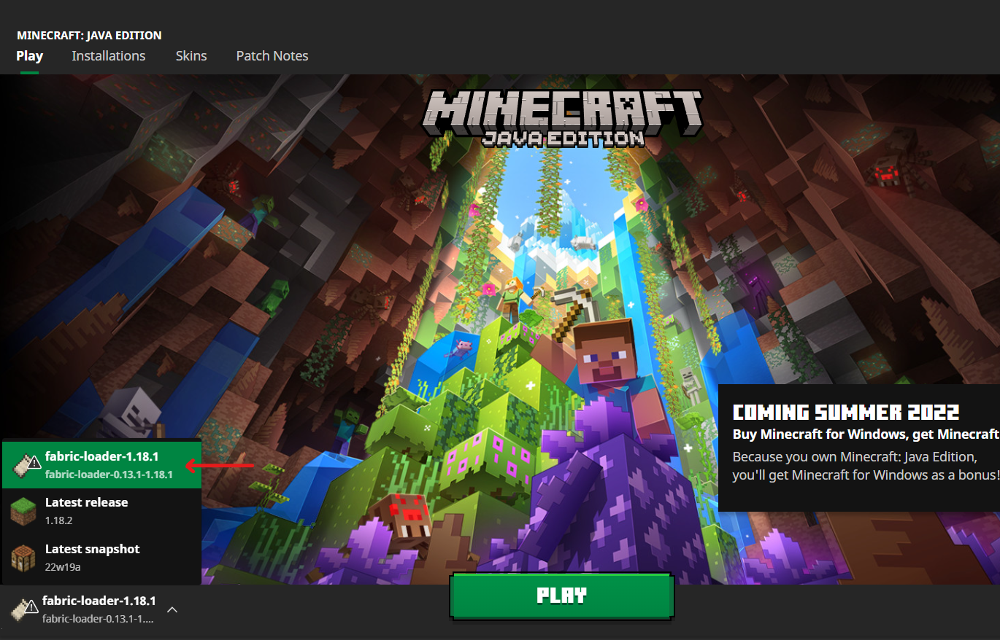

Installation Tutorial
Follow these steps to play our mod in Minecraft. If you would
like to see or use the code itself, click Repository in the
upper right.
1. Buy and download Minecraft:
Java Edition. At this link,
purchase the game and follow installation instructions.
2. Download Fabric. Follow this link,
click the download button, and open the downloaded installer.
3. Install the correct versions. Within the installer window,
select Minecraft Version 1.18.1 and Loader Version 0.13.1 -
getting these numbers right is the most important part of this
process. Keep "Create profile" checked and click install.
4. Allow Fabric to set itself up. Open the Minecraft Launcher,
select the fabric loader (make sure the version numbers match
those in this image) and click play.

5. Close Minecraft and find the mods folder:
a. On Windows, press Win+R and type %appdata%\.minecraft\mods
b. On Mac, in Finder, in the Go menu, select “Go to Folder”
and enter ~/Library/Application Support/minecraft/mods
c. On Linux, type ~/.minecraft/mods or
/home//.minecraft/mods
6. Add the important Fabric API file. Click this link
to download this jar file, and place it inside your mods folder.
7. Download our mod file. Click here
and place the file inside your mods folder.
8. Play Minecraft using the same process as in step 4 above.
Create a world and enjoy evolution in action!